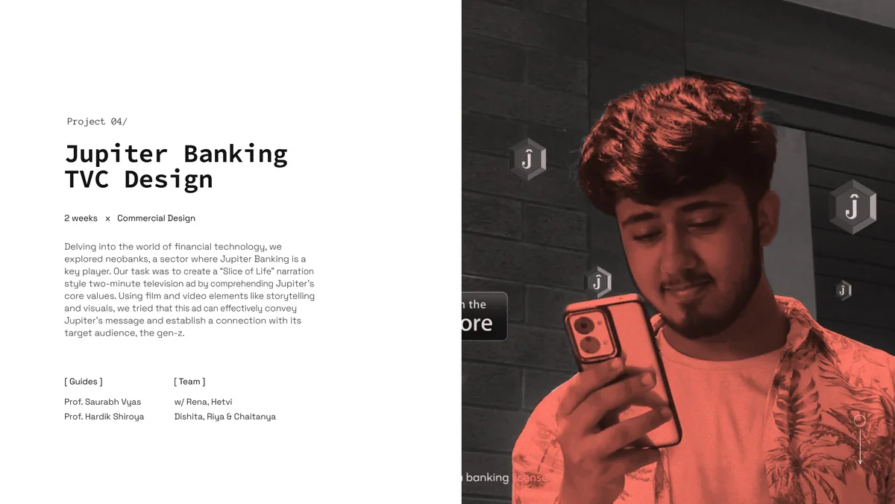
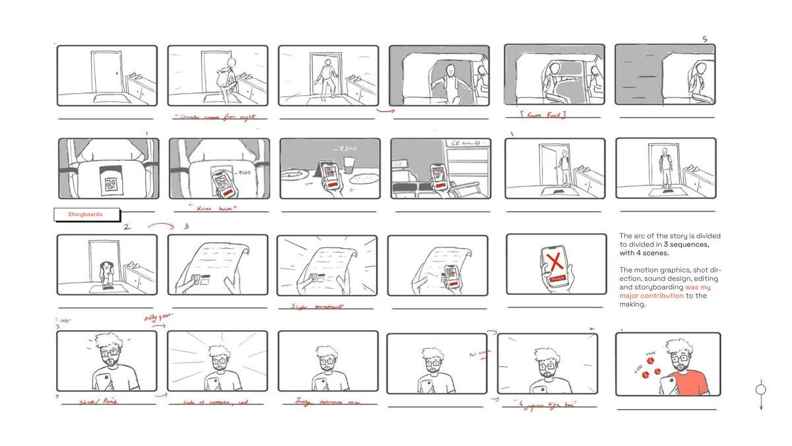
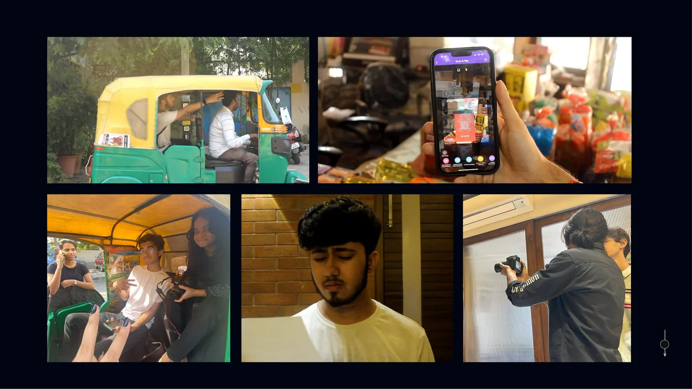
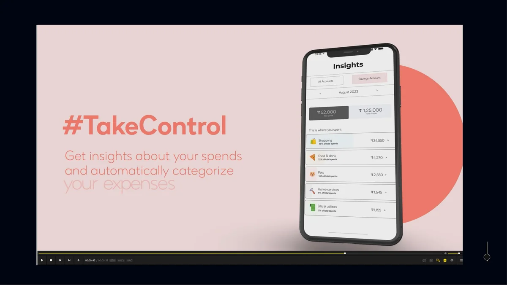

Delving into the world of financial technology, the team explored neobanks where Jupiter Banking is a key player. The task was to create a "Slice of Life" narration style two-minute television ad by comprehending Jupiter's core values. Using film and video elements like storytelling and visuals, the ad needed to effectively convey Jupiter's message and establish a connection with its target audience: gen-z.
Jupiter Banking is a developing company. Since the team were the brand's users and customers, they believed it needed a more engaging advertisement: one that showed real people solving real problems, not a product demo with motion graphics.

The process began with scripting, storyboarding, and location scouting. The narrative was built around a "Slice of Life" framework: real scenarios where Jupiter's features solve everyday friction around money. The storyboard mapped each scene to a specific product value: splitting bills, tracking spending, instant transfers.

Directing and cinematography were handled on location. The visual language leaned warm and candid, matching the conversational tone of the script. The goal was to keep the ad feeling like a story first, a product pitch second.


Editing, color grading, and sound design brought the final cut together. DaVinci Resolve handled the color grade. Premiere Pro and After Effects managed the edit and motion elements. The two-minute runtime was treated as a hard constraint, not a suggestion.
The final ad was reviewed by faculty and tested informally with target-audience peers. The "Slice of Life" narration landed: viewers connected with the characters before the product entered the frame.
"Waah, ye toh accha hai idea, mujhe bhi kaafi dikkat aati hai online karne ki wajah se."Khadir M. Shiek, Auto Driver
"It needs more refinement, but a great attempt at making an advertisement."Faculty Review
Shreyo Debnath · Designer